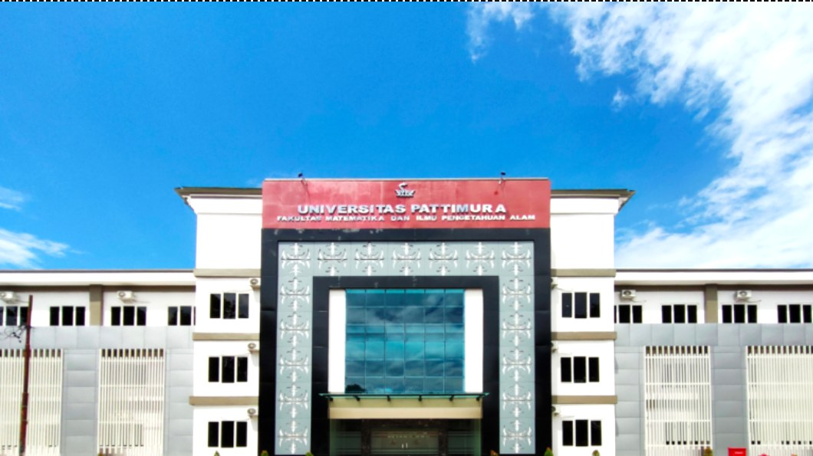

Surat Aktif Kuliah
Bukti resmi bahwa Anda terdaftar aktif pada semester berjalan, untuk beasiswa atau administrasi lain.
- 1 hari kerja
- Syarat: KRS berjalan

Fakultas Sains dan Teknologi
Surat aktif kuliah, transkrip sementara, cuti akademik, dan legalisir. Ajukan dari ponsel atau laptop, lalu ambil berkasnya saat sudah siap.
Ajukan permohonan Lihat layanan
Katalog
Cek estimasi waktu dan persyaratan, lalu lanjut ke formulir.
Bukti resmi bahwa Anda terdaftar aktif pada semester berjalan, untuk beasiswa atau administrasi lain.
Rekap nilai dan IPK sementara hingga semester terakhir, untuk magang, lomba, atau lamaran kerja.
Pengajuan berhenti sementara dari perkuliahan pada satu semester dengan alasan yang jelas.
Pengesahan salinan ijazah atau transkrip. Bawa berkas asli saat mengambil di loket akademik.
Cara kerja
Empat tahap, status dikirim ke email Anda di setiap tahap.
Pilih jenis layanan dan lengkapi data pada formulir.
Petugas akademik fakultas memeriksa kelengkapan data.
Dokumen dicetak, ditandatangani, dan diberi nomor surat.
Ambil di loket, atau unduh versi digital jika tersedia.
Formulir
Isi sesuai data kemahasiswaan Anda. Kolom bertanda wajib harus diisi.
Permohonan diterima. Ini halaman demo: data tidak dikirim ke server, tetapi seluruh validasi formulir sudah berjalan.